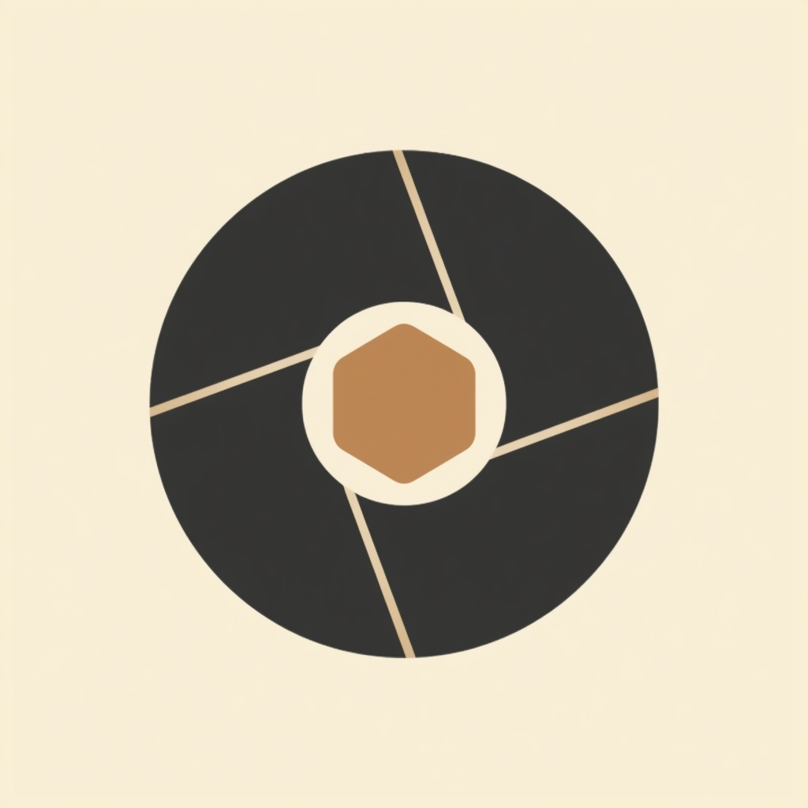

Compare phones fairly
Photograph the same scene from the same position. Compare daylight, low light, moving subjects, skin tones, autofocus and highlight detail. Keep resolution and processing settings visible.

lens.← Sand LabsYOUR PHOTOGRAPHIC NOTEBOOKSEE DIFFERENTLY. MAKE SOMETHING WORTH SHARING.
A home for your photographs, a place to sharpen your eye, and the beginning of a book you can call your own.
Build my gallery ↗Free first version · Your photos stay on this deviceOpening your notebook…
YOUR WAY OF SEEING
JPEG, PNG or WebP, up to10MB each. We keep up to24 optimized previews on this device; keep your originals separately. Previews do not retain EXIF metadata.
Group photographs into an ordered story. Collections are private and do not change your personal book order.
A BETTER EYE, ONE EXERCISE AT A TIME
Short, original lessons and practical exercises. Try them with the camera you already have.
ONE MONTH. ONE THEME. YOUR INTERPRETATION.
Before public launch we will define eligibility, consent, voting limits, judging, tie-breaking and the route from a competition shortlist to the book. No winners are invented in this preview.
GOOD QUESTIONS MAKE BETTER PHOTOGRAPHS
Prepare a question for the future community. These drafts are private; nobody else can see or answer them yet.
THE CAMERA IS A TOOL. THE PHOTOGRAPH IS THE POINT.
Reviews, presentations and controlled comparisons belong here. There is no untested “best phone” ranking in this first version.
Photograph the same scene from the same position. Compare daylight, low light, moving subjects, skin tones, autofocus and highlight detail. Keep resolution and processing settings visible.
Lens quality, sensor area, stabilisation, focus reliability and processing affect results. A larger file is not proof of a better photograph.
Phones may combine several frames for HDR or noise reduction. Portrait blur and sharpening can change fine detail; inspect edges and moving subjects rather than judging a thumbnail alone.
FROM A SINGLE FRAME TO A COLLECTION
Choose photographs in the gallery, then arrange your personal edition. This is your shortlist, not the outcome of a public competition.
Download opens as a self-contained HTML book with your photographs. Use your browser's Print to save a PDF. The printed community book is planned for a later phase, roughly two–three months after launch; permissions, selection rules and pricing must be agreed first. No orders or payments are accepted here.
YOUR WORK. YOUR COPY.
Backups include your optimized photo previews, notes and unfinished plans. Keep them private. Original full-resolution photos are not included.